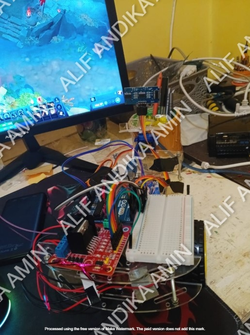
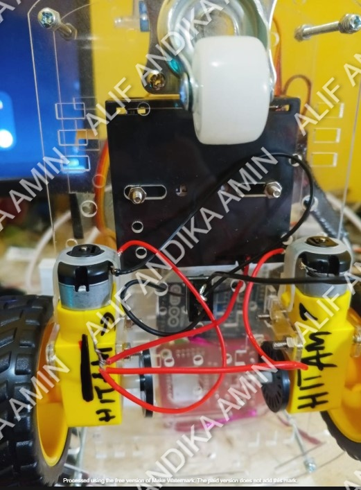

Robot obstacle avoidance adalah jenis robot yang dirancang untuk mendeteksi dan menghindari rintangan secara otomatis saat bergerak di lingkungan tertentu. Teknologi ini umumnya digunakan dalam robot otonom seperti robot vacuum cleaner, robot eksplorasi, atau robot pemetaan.
Komponen yang digunakan adalah sensor ultrasonik, Arduino, L298N, dan 2 motor.
1. Sensor mendeteksi keberadaan rintangan.
2. Mikrokontroler membaca data jarak dari sensor.
3. Jika rintangan terdeteksi dalam jarak tertentu, mikrokontroler memerintahkan motor untuk mengubah arah gerak.
4. Robot menghindar dan melanjutkan perjalanan tanpa menabrak.
 